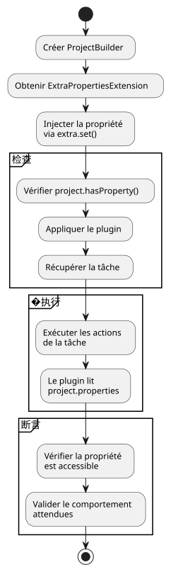

解决 Gradle 单元测试挑战的 `gradle.properties
Publié le 13 July 2025
问题：隔离 Gradle 插件的单元测试
在编写Gradle插件的单元测试时，一个常见的挑战是管理对项目配置的依赖，例如在文件中定义的属性。gradle.properties. 在我们的情况下，插件`jbake.ghpages`应该读取一个属性`site_config_path`为了正常运行。 该任务的单元测试`initialize`它必须检查插件在此属性存在时的行为。
根本问题是，单元测试在设计上必须是 隔离。使用`ProjectBuilder`Gradle 创建一个… 的实例`Project`在内存中，完全与文件系统上的真实项目脱节。因此，此测试实例不会自动读取该文件。gradle.properties`因此并不知道该属性`site_config_path.
问题的架构
以下图示说明了测试环境与文件系统之间的脱节 :
假好主意的诱惑
一种初步的方法可能是创建一个文件`gradle.properties`在测试资源中是虚假的。
// src/test/resources/gradle.properties
site_config_path=src/jbake/settings/site.yml然而，这种方法注定会以失败告终，因为`ProjectBuilder`它不是为扫描文件系统以查找配置文件而设计的。测试将保持隔离并忽略此文件。
解决方案：使用 ExtraPropertiesExtension 模拟属性
�优雅地解决此问题的方法不是 读取 文件，而是 模拟 该属性直接存在于对象中。`Project`测试。 Gradle提供了一种强大的机制来实现这一点：额外属性（Extra Properties).
步骤1：理解ExtraPropertiesExtension
`ExtraPropertiesExtension`是一个键值容器，附加到 Gradle 模型的每个对象上。它允许动态地向项目、任务或任何其他 Gradle 扩展添加属性。

步骤 2：测试布置 - 准备
让我们先来创建单元测试的基本结构 :
class JbakeGhPagesPluginTest {
@TempDir
lateinit var testProjectDir: File
@Test
fun `check initialize and config yaml file if not existing`() {
// Étape 1 : Créer un projet de test isolé
val project = ProjectBuilder.builder()
.withProjectDir(testProjectDir)
.build()
// Suite des étapes...
}
}步骤 3 : 注入属性
以下是将属性注入测试项目的详细过程：
@Test
fun `check initialize and config yaml file if not existing`() {
// Étape 1 : Créer un projet de test isolé en mémoire
val project = ProjectBuilder.builder()
.withProjectDir(testProjectDir)
.build()
// Étape 2 : Récupérer le gestionnaire de propriétés supplémentaires
val extra = project.extensions.getByType(ExtraPropertiesExtension::class.java)
// Étape 3 : Définir la propriété requise pour ce test
extra.set("site_config_path", "src/jbake/settings/site.yml")
// Étape 4 : Vérifier que la propriété est bien injectée
assertTrue(project.hasProperty("site_config_path"))
// Étape 5 : Appliquer le plugin qui pourra maintenant accéder à la propriété
project.plugins.apply("jbake.ghpages")
// Étape 6 : Exécuter la tâche et vérifier son comportement
val task: Task = project.tasks.findByName("initialize")
.apply(::assertNotNull)!!
// Étape 7 : Exécuter les actions de la tâche
task.actions.forEach { it.execute(task) }
// Étape 8 : Assertions finales
assertEquals(
"src/jbake/settings/site.yml",
project.properties["site_config_path"],
"La propriété devrait être accessible dans le projet"
)
}步骤 4 : 解决方案流程图

步骤 5 : 前后对比
步骤 6：管理多个测试用例
为了测试不同的场景，让我们创建多个测试，使用各种配置：
class JbakeGhPagesPluginTest {
@TempDir
lateinit var testProjectDir: File
private fun createProjectWithProperty(propertyValue: String?): Project {
val project = ProjectBuilder.builder()
.withProjectDir(testProjectDir)
.build()
// Injection conditionnelle de la propriété
propertyValue?.let { value ->
val extra = project.extensions.getByType(ExtraPropertiesExtension::class.java)
extra.set("site_config_path", value)
}
return project
}
@Test
fun `should work with valid property`() {
val project = createProjectWithProperty("src/jbake/settings/site.yml")
project.plugins.apply("jbake.ghpages")
val task = project.tasks.findByName("initialize")!!
task.actions.forEach { it.execute(task) }
// Assertions pour le cas normal
assertEquals("src/jbake/settings/site.yml", project.properties["site_config_path"])
}
@Test
fun `should handle missing property gracefully`() {
val project = createProjectWithProperty(null) // Pas de propriété
project.plugins.apply("jbake.ghpages")
val task = project.tasks.findByName("initialize")!!
// Le plugin devrait gérer l'absence de propriété
assertDoesNotThrow {
task.actions.forEach { it.execute(task) }
}
}
@Test
fun `should handle invalid property path`() {
val project = createProjectWithProperty("invalid/path/to/config.yml")
project.plugins.apply("jbake.ghpages")
val task = project.tasks.findByName("initialize")!!
// Test du comportement avec un chemin invalide
assertThrows<FileNotFoundException> {
task.actions.forEach { it.execute(task) }
}
}
}解决方案的最终架构
此方法的优势
-
完全隔离: 该测试不依赖任何外部文件。它是自包含的，可以在任何环境中可靠地执行（本地、CI/CD 等）。
-
清晰与意图: 测试显式声明了其执行的前提条件。任何读取测试的人都会立即看到该插件需要该属性`site_config_path`以便运行。
-
可维护性: 如果属性名称更改，只需在测试中的一个地方更新它，而无需操作测试配置文件。
-
灵活性: 通过简单地更改每个测试中注入属性的值，就可以轻松地测试不同的场景（有效值、无效值、缺失值等）。
-
性能: 不读取文件，一切都在内存中进行，这使得测试更快。
-
可重复性: 这些测试是确定性的，因为它们不依赖于文件系统的状态。
良好实践和建议
创建一个实用方法
class GradleTestUtils {
companion object {
fun createProjectWithProperties(
projectDir: File,
properties: Map<String, String>
): Project {
val project = ProjectBuilder.builder()
.withProjectDir(projectDir)
.build()
val extra = project.extensions.getByType(ExtraPropertiesExtension::class.java)
properties.forEach { (key, value) ->
extra.set(key, value)
}
return project
}
}
}属性验证
@Test
fun `should validate property injection`() {
val project = createProjectWithProperty("test-value")
// Vérifications multiples
assertTrue(project.hasProperty("site_config_path"))
assertEquals("test-value", project.property("site_config_path"))
assertNotNull(project.properties["site_config_path"])
// Vérification que la propriété est accessible par le plugin
project.plugins.apply("jbake.ghpages")
// ... reste du test
}结论
与其为让单元测试环境读取配置文件而苦苦挣扎，最佳做法是模拟所需的状态。使用`ExtraPropertiesExtension`以编程方式定义 Gradle 属性是实现有效且可靠的插件单元测试的最干净且最强大的方法。
这种技术将外部依赖问题转化为简单的依赖注入，这正是测试驱动开发（TDD）哲学的核心。它提供了对测试环境的完全控制，同时保持了进行高质量单元测试所需的隔离。
本文中的图表和示例展示了如何以渐进且系统的方式实施这种方法，从而能够为您的 Gradle 插件创建一个健壮且易于维护的测试套件。